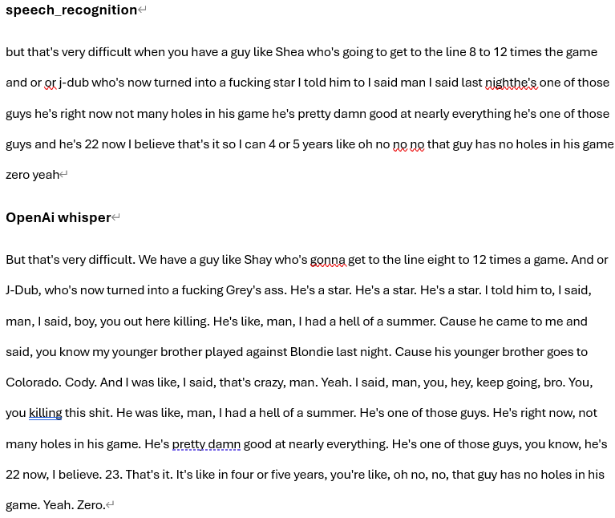
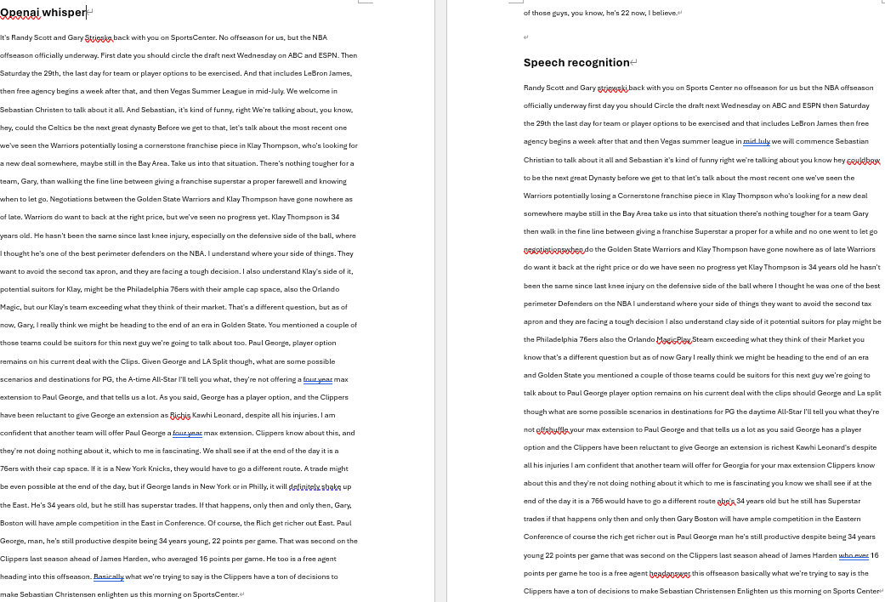
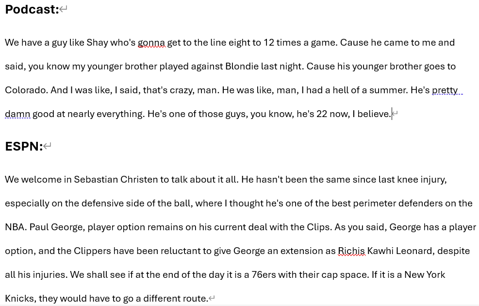
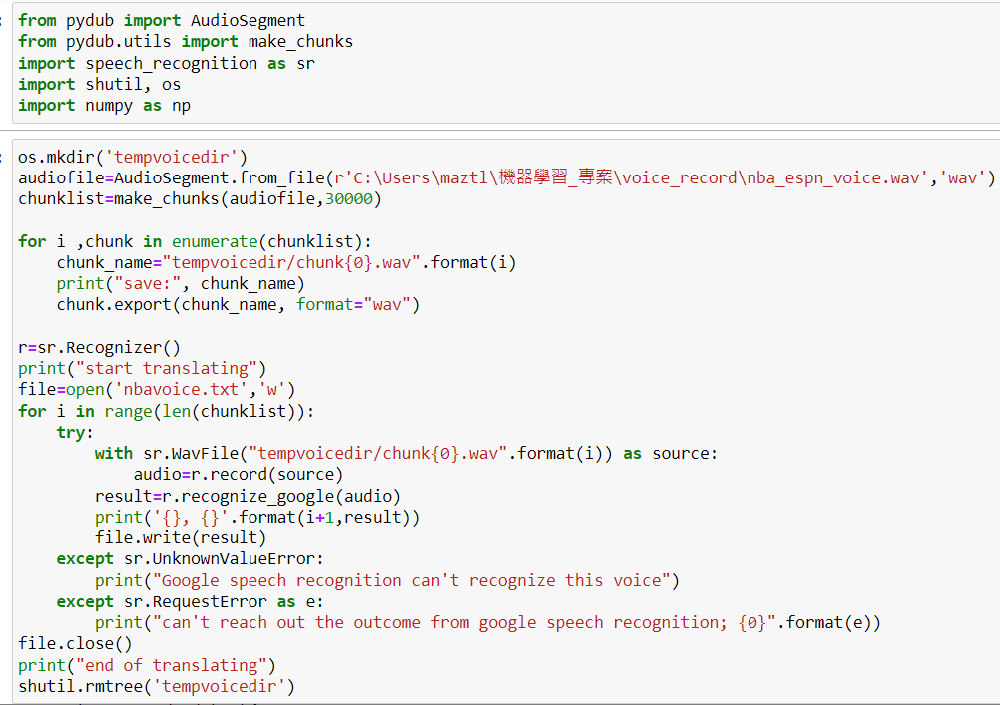
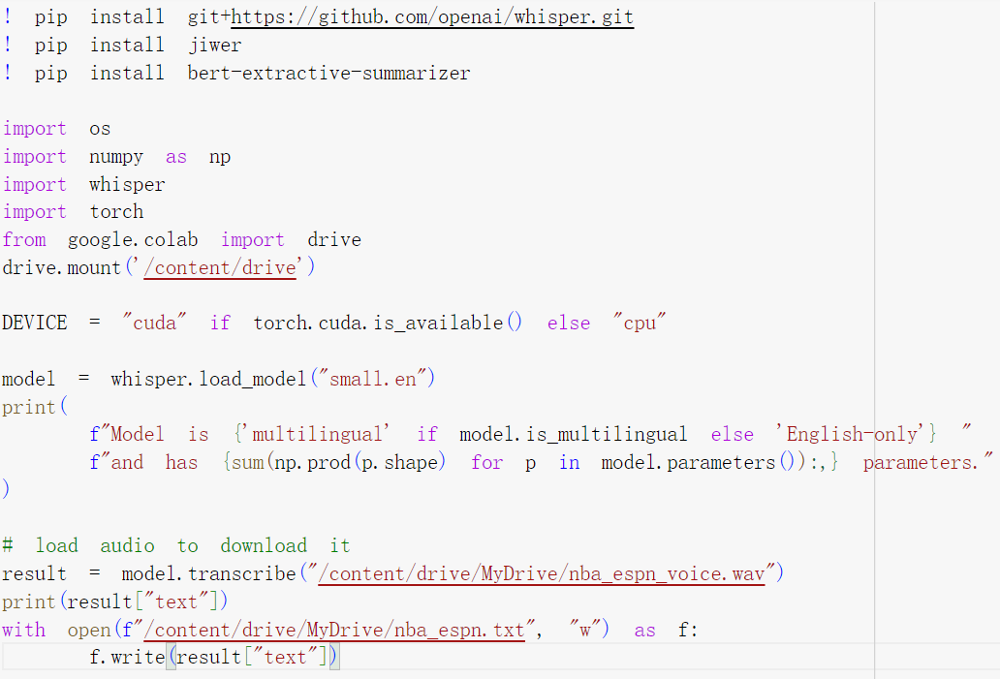

Project 1
Background: 使用機器學習套件來將影片音訊轉成文字，再藉由文章摘要擷取出重點部分。
Data Source:


Model Selection
Model : 音訊轉文字 - OpenAi whisper 、 speech_recognition 文章摘要擷取 - bert-extractive-summarizer
Results
語音辨識 :
 文章摘要擷取 :
Code Demo
 Conclusion 探討模型的技術
OpenAI Whisper:
在實作上whisper的表現較好，Speech_recognition的API我使用的是google web speech
但google未公開模型架構，因此研究whisper的模型是如何建構，使錯誤率顯著的降低
資料:
Whisper數據集包含68萬小時的標註音訊，使用sequence-to-sequence model來學習語音和其轉錄的文本，
且消除了逆文本正規化步驟，簡化了語音辨識流程
將音訊資料分割成每30秒的片段，每個片段都有相應的文本作為訓練標籤，同時使用包含無語音片段的音頻來訓練，以提高區分語音和非語音部分的準確性
模型 - Transformer encoder / decoder:
encoder：
使用小型的stem，包含兩個卷積層，濾波器寬度為3，第二個卷積層步幅為2，並使用GELU激活函數
decoder：
解碼器使用學習的位置嵌入和綁定的輸入-輸出標記表示
編碼器和解碼器具有相同的寬度和Transformer塊數量，確保了模型的對稱性
訓練:
使用256個片段的批次大小進行訓練，模型經過220次更新，約對數據集進行兩到三次訓練，由於只訓練了幾個epochs，因此過擬合不是問題
沒有使用數據增強或正則化方法，而是依賴大型數據集的多樣性促進廣泛性